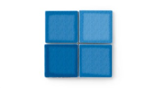
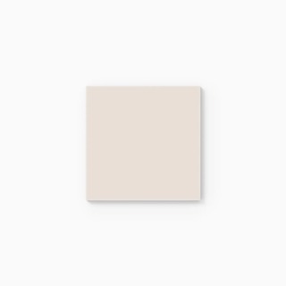

Trade Signal — Design Concept 01
Sample Kit Builder: closing the single-sample dead end
A Trade Portal module that intervenes at the exact point trade-show-acquired accounts stall — after one sample, before a second request or a project upload.
73%
of trade-show-acquired trade leads who request exactly one sample never advance to a project upload or purchase — more than double the stall rate of leads acquired via email capture (33%). source: trade-signal/docs/measurement-foundation.md, n=115 single-sample trade-show leads
Current state
Stalled 34 days
Harbor Design + Build
Trade · Trade Show

No further activity on this account.
Portal shows nothing prompting a next step.
Portal shows nothing prompting a next step.
Sample Kit Builder
Reactivation sent
Harbor Design + Build
Trade · Trade Show
Most often specified with Aegean
Add companion samples to kit
Skip, start a project instead

Natural Press — Oatmeal (trim)
Grout — Alabaster
Triggered on day 21 of no activity — day 5 and day 12 get a lighter-touch email nudge first (see experiment #1).
Why this is the intervention point, not a generic redesign
- It targets the specific gap, not the whole funnel. Trade-show leads already convert reasonably once they request a second sample or upload a project — the drop happens strictly between "one sample" and "anything after." The module only appears in that exact state, so it doesn't add friction for accounts already progressing normally.
- It reduces the decision, it doesn't just remind. Rather than a generic "still interested?" nudge, it surfaces the specific companion tile and grout combination most often specified alongside the customer's actual first pick — sourced from real specification co-occurrence, not a generic upsell.
- It has an explicit exit ramp. "Skip, start a project instead" is given equal visual weight to the kit suggestion — for accounts that don't need a second sample and are ready to scope a project, the module doesn't force an unnecessary step.
- It's measurable on arrival. Second-sample-request rate and project-upload rate for prompted vs. unprompted trade-show accounts is the direct read, matching experiment #2 in the measurement foundation.